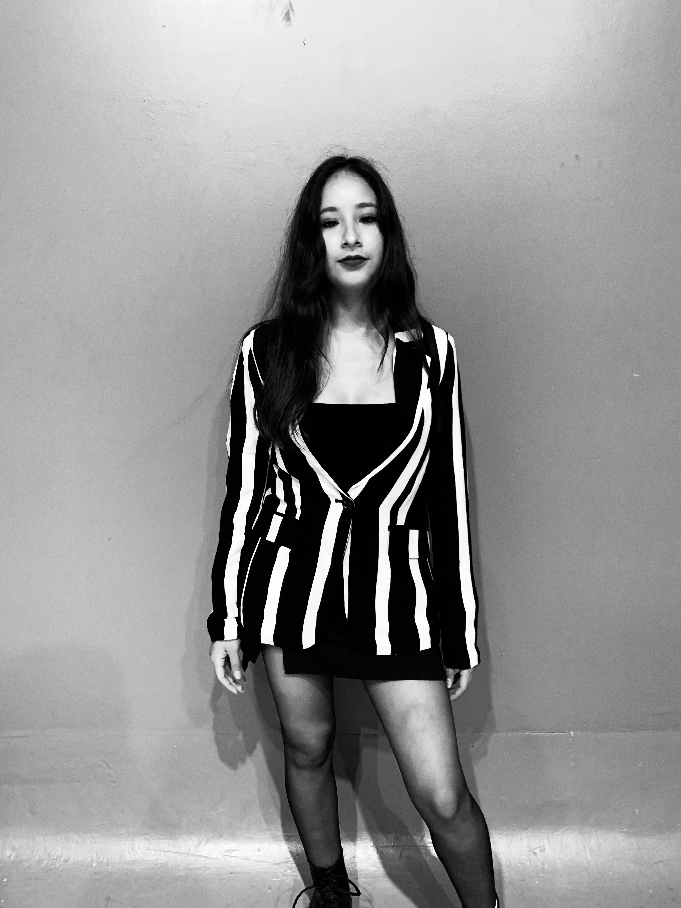
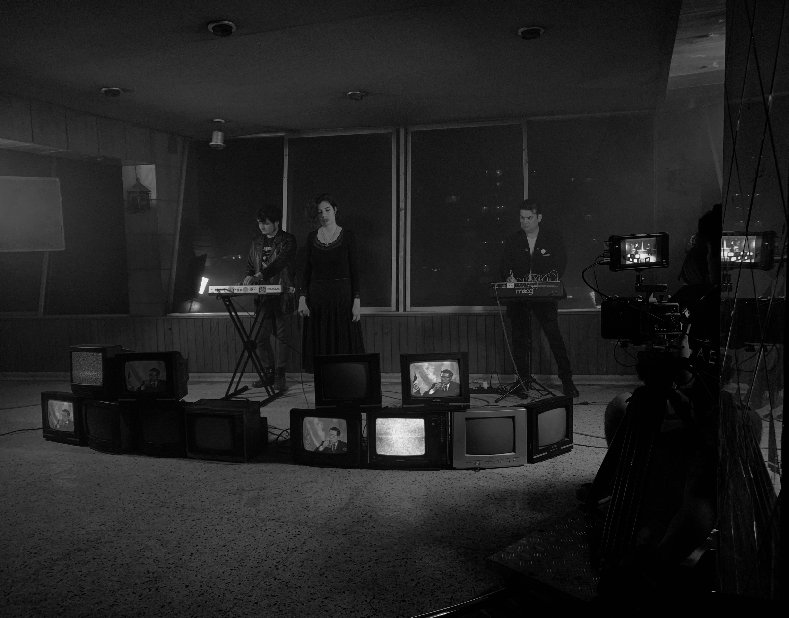

ABOUT ME: ღ｡.:*LESLIE SÁNCHEZ*.:｡ღ

Mi nombre es Leslie tengo 25 años de edad, nací y resido en Lima Perú, en el distrito de magdalena, estudiante de audiovisuales en el instituto Toulouse Lautrec
Me considero una persona pro activa y muy creativa, en lo que consierne a mi carrera me voy más por la dirección de arte, styling y maquillaje, acabando me gustaria tomar especializaciones en ello.

En mis planes definitivamente estaria tomar cursos de maquillaje en el extranjero para así ir abarcando más conocimiento, por ahora he trabajado en proyectos freelance o proyectos independientes, he obtenido mayor conocimiento en las practicas. Mi trabajo ideal seria obtar por un rubro donde se me permita la libertad creativa como lo sería trabajar en videoclips, editoriales e inclusive en algunos cortos o documentales pero experimentales

No solo me dedico a trabajos en el rubro audiovisual, me gusta experimentar y descubrir todo rubro creativo, por ello también me muevo en el rubro de la pintura y o animaciones. sobre todo en el mundo de la pintura es algo que me apasiona bastante. a su vez me he ido moviendo en el mundo de la resina y por ello tengo una marca llamada LALI en donde realizo estos trabajos, por el momento hago ceniceros, roachclips y decorados a base de resina, es un proyecto personal en el que aún estoy llevandolo a flote.